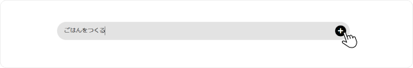
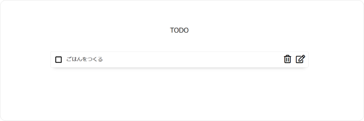
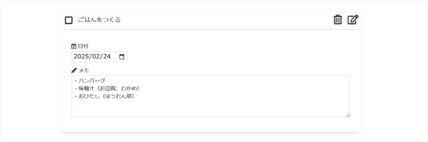
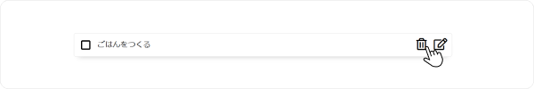
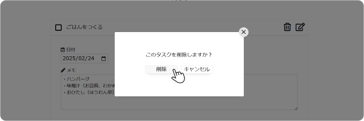
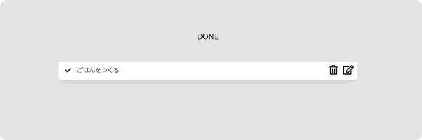

TODO
タスクを追加してください
DONE
タスクを完了してください
HOW TO USE
-
1タスクの追加
灰色のエリアにタスクを入力したら、「＋」ボタンをタップしてタスクを追加します。 
追加したタスクは、「TODO」エリアに表示されます。 
-
2タスクの編集
「」ボタンを押下し、タスクの詳細入力エリアを表示します。
「日付」→タスクの締め切り日を追加。「メモ」→タスクに関するメモを追加。 
-
3タスクの削除
「」ボタンを押下し、削除画面を表示します。 
「削除」を選択することでタスクを削除できます。 
-
4タスクの完了
タスクが完了したらタスクのチェックエリアをクリックします。
完了したタスクは「DONE」エリアに表示されます。 
×
このタスクを削除しますか？